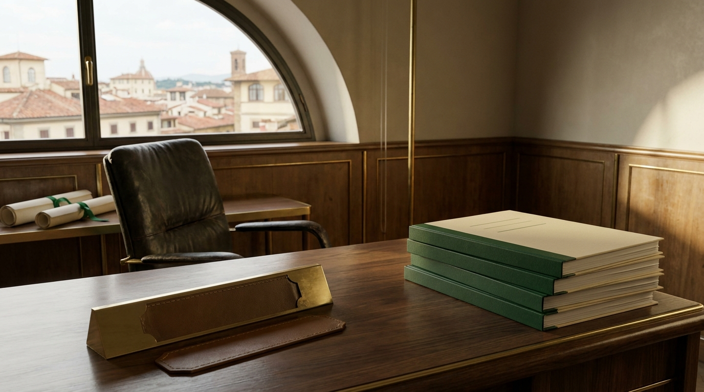

Calo di mansioni e mobbing: quando la riduzione delle mansioni è illecita
Vedersi alleggerire i compiti non significa automaticamente subire mobbing. La Cassazione, con la sentenza n. 5472 del 2021, ha ribadito che la riduzione delle mansioni può rientrare in legittime scelte organizzative. Per configurare mobbing serve invece la prova di un disegno persecutorio reiterato. Vediamo dove passa il confine e cosa conta in giudizio.

Il caso e il principio della Cassazione
Un dipendente lamenta di aver subito un progressivo svuotamento dei propri compiti e chiede il riconoscimento del mobbing, ossia di una condotta vessatoria sistematica del datore di lavoro. La Corte di Cassazione, Sezione Lavoro, con la sentenza n. 5472 del 26 febbraio 2021, ha precisato un punto centrale: la sola riduzione delle mansioni non basta a integrare il mobbing.
Secondo i giudici, quando il calo dei compiti dipende da riorganizzazioni aziendali o da innovazioni tecnologiche, la condotta è in linea di principio legittima. Il mobbing scatta soltanto se il lavoratore dimostra l'esistenza di un intento persecutorio specifico, cioè una volontà del datore di danneggiarlo o emarginarlo attraverso comportamenti reiterati nel tempo.
Inquadramento normativo
Il mobbing non è disciplinato da una norma autonoma del codice civile, ma viene ricostruito dalla giurisprudenza a partire da diverse disposizioni. Rilevano in particolare l'articolo 2087 del codice civile, che obbliga il datore a tutelare l'integrità fisica e la personalità morale del lavoratore, e l'articolo 2103 del codice civile sullo ius variandi, cioè il potere del datore di modificare le mansioni entro precisi limiti.
La Cassazione ha elaborato una nozione tecnica di mobbing fondata su più elementi che devono coesistere: una pluralità di condotte ostili, la loro continuità nel tempo, l'idoneità a produrre un danno alla salute o alla professionalità e, soprattutto, l'elemento soggettivo, ossia l'intento persecutorio unitario (il cosiddetto disegno vessatorio). La sentenza n. 5472/2021 si colloca in questo solco: senza la prova del disegno, il demansionamento resta sul piano - eventualmente illegittimo - della violazione dell'articolo 2103, ma non diventa mobbing.
Cosa cambia per il lavoratore e per l'azienda
Per il lavoratore la distinzione non è teorica. Il demansionamento illegittimo (assegnazione a mansioni inferiori o svuotamento dei compiti senza giustificazione) consente di chiedere il ripristino delle mansioni e il risarcimento del danno professionale. Il mobbing, invece, apre a un risarcimento più ampio, comprensivo del danno alla salute, ma richiede una prova molto più rigorosa: occorre documentare una serie di episodi collegati da una regia vessatoria.
Chi agisce in giudizio invocando il mobbing senza riuscire a provare l'intento persecutorio rischia di vedersi respingere la domanda, anche quando il demansionamento c'è stato davvero. Per questo è spesso preferibile valutare con attenzione su quale piano impostare la causa.
Per il datore di lavoro la sentenza conferma un margine di manovra: le scelte organizzative e tecnologiche che incidono sulle mansioni sono legittime se non nascondono finalità ritorsive. Resta però l'onere di poter dimostrare la ragione economica o organizzativa della riduzione, soprattutto quando questa colpisce un singolo dipendente in modo evidente.
Cosa fare in concreto
- Documenta ogni episodio. Conserva email, ordini di servizio, comunicazioni e annota date e contesto di ciascun fatto rilevante. La continuità nel tempo è un elemento decisivo.
- Distingui i piani. Verifica con un legale se il caso configura un demansionamento illegittimo, un mobbing o un altro illecito (ad esempio lo straining): l'impostazione della domanda cambia la prova richiesta.
- Raccogli prove dell'intento. Per il mobbing servono indizi di un disegno persecutorio: trasferimenti ingiustificati, isolamento, contestazioni pretestuose ripetute.
- Tutela la salute. In presenza di disturbi, rivolgiti tempestivamente al medico e conserva la documentazione sanitaria: è la base del danno biologico.
- Agisci nei termini. Valuta subito i tempi per impugnare atti come trasferimenti o sanzioni disciplinari, per non perdere diritti.
Consigliamo di richiedere una valutazione preliminare prima di avviare qualsiasi azione, così da scegliere la strategia probatoria più solida rispetto al caso concreto.
Disclaimer
Contributo informativo a cura di Tamburro & Partners - Avv. Giuseppe Tamburro. Non costituisce parere legale.
Ogni storia di lavoro ha i suoi tempi.
Se gestisci HR e vuoi un confronto su contenzioso, ispezioni o licenziamenti, scrivi allo studio. Ti rispondiamo entro un giorno lavorativo.